Java并发编程
本文对Java中的并发变成进行了简单的描述。是本人阅读《Java并发编程的艺术》一书的读书笔记。本文对重要的概念进行了记录。
本文首先介绍了各种各样的和锁相关的概念。然后介绍了Java多线程的技术要点，最后介绍了一些经典使用案例。
0. 重要技术要点目录
0.1 和锁有关的概念
关于锁的概念有很多，这里一一列举。
按照锁的的状态分
在Java中，按照锁的状态分，有四种状态。分别是：
- 无锁
- 偏向锁
- 轻量级锁
- 重量级锁
偏向锁是可以取消的，根据系统的实际使用情况。因为可能有的场景，系统中资源冲突严重，那么偏向锁就没有什么必要存在了，反而增加处理逻辑，更慢。
按照锁的实现方式分
- 乐观锁
- 悲观锁
在Java中没有特地讲乐观锁，悲观锁。但实际上这两种锁是可以和Java中提到的概念一一对应。
按照试用场景分
- 可重入锁--ReentranLock
- 读写锁--ReentranReadWriteLock
这两种锁是可以直接和Java中的实现对应的。
其他
- volatile和synchronized
这两个关键字是Java锁的基础（很多其他语言也有相同的使用）。例如可重入锁和读写锁其实都是对这两个关键词的应用，并不是另起炉灶。
- CAS操作
CAS（Compare and swap）是一种乐观锁的操作方式。CAS操作保证了线程安全，同时没有对线程加锁。是一种常见的优化锁使用的选择。
- happens-before原则
指令重排的相关概念。指的是按照编码逻辑的指令的执行顺序。A指令happens-beforeB指令。那么一个重要的原则是，判断是否可以重排的依据，并不是要求指令一定要按照物理顺序。只要重排后的指令执行结果和重排前一致就可以。
1. Java中的几种锁
读写锁
重入锁
2. Java中的锁的状态
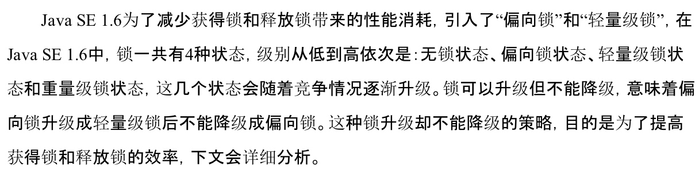
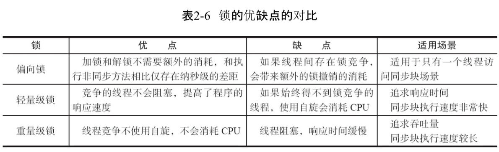
锁会升级不会降级。越“轻”的锁，效率越高。但是越不好解决同步的问题（不能解决的时候就要升级）。
偏向锁就是偏向于拿锁的线程通常是同一个，这样就可以提高效率。
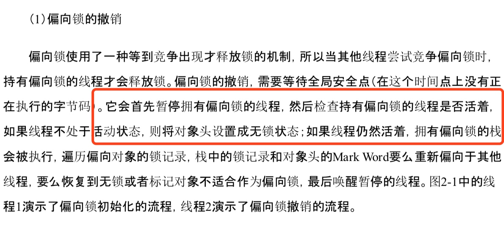
Q:红框处为什么要检查线程是否活着？
A:线程1执行完毕后,不会主动去释放偏向锁。
Q:偏向锁是如何升级成轻量级锁的？
A:当另一个线程获取偏向锁失败，就升级成轻量级锁。轻量级锁的特点是自旋。
Q:轻量级锁是如何升级成重量级锁的？
A:轻量级锁自旋到达一定条件就会升级成重量级锁。但是具体条件是啥，没有找到相关资料。
总结，获取不到锁就会往上膨胀。直到重量级锁。
通俗来讲就是：
偏向锁：仅有一个线程进入临界区
轻量级锁：多个线程交替进入临界区
重量级锁：多个线程同时进入临界区
问题
轻量级锁是自旋的，那么根据什么条件判断会膨胀成重量级锁
3. volatile
使用volatile修饰变量，可以让这个变量在各个线程之间永远显示的是最新的值。为什么会有这么一个说法？每一个线程有自己的独立缓存。对于一个共享变量，在多线程并发的情况下，可能导致自己的缓存和实际的值不等。而volaile的出现，使得线程自己的缓存无效，每一次都需要去内存中读取最新的值。
volatile可以看做轻量的synchronized。可以减少锁的程度。提高性能。
3. volatile实现原理的相关知识
- happens-before原则，涉及到volatile的底层实现原理。
4. happens-before原则
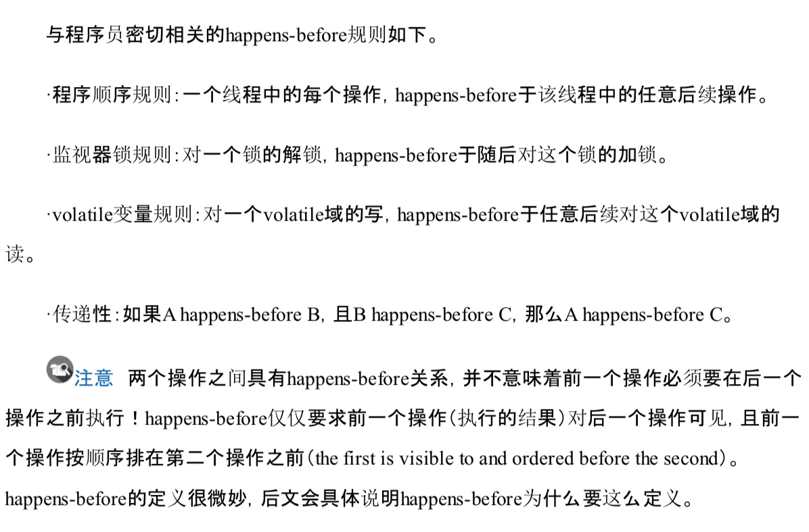
所以本质的意思就是指令重排不能影响计算结果。只要计算结果一样，虽然有happens-before关系，也不要求一定要按照happens-before的顺序执行
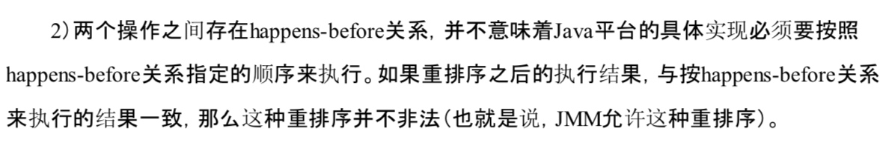
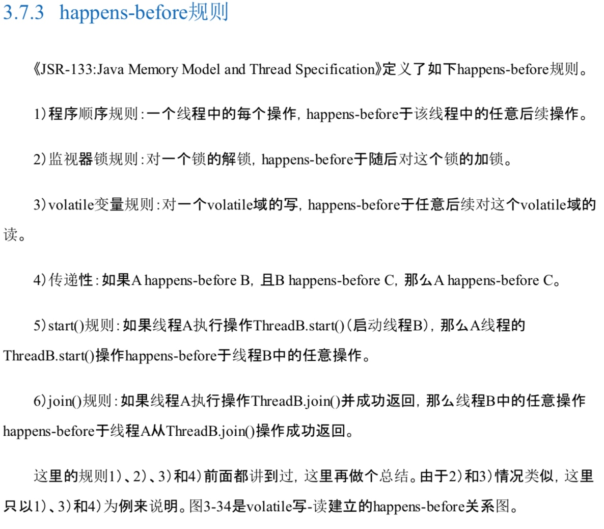
volatile的经典应用-单例模式
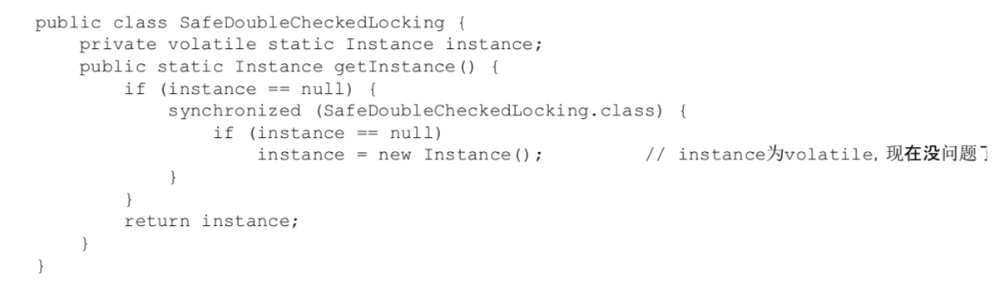
wait()和notify()
作用
好处。
wait() 等待。相比一个死循环，定期休眠来判断是否结束要好的多，因为定期休眠可能会导致响应不及时。notify() 之后，并不是对应的wait会立刻结束
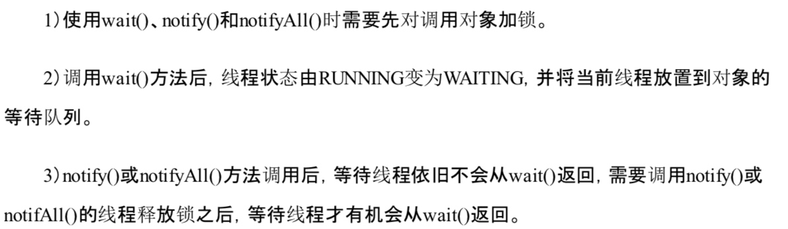
ThreadLocal
线程池技术
几种线程池的创建方式，以及适应的场景。
锁和synchronized的关系
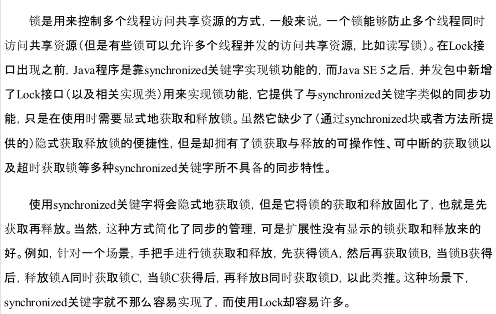
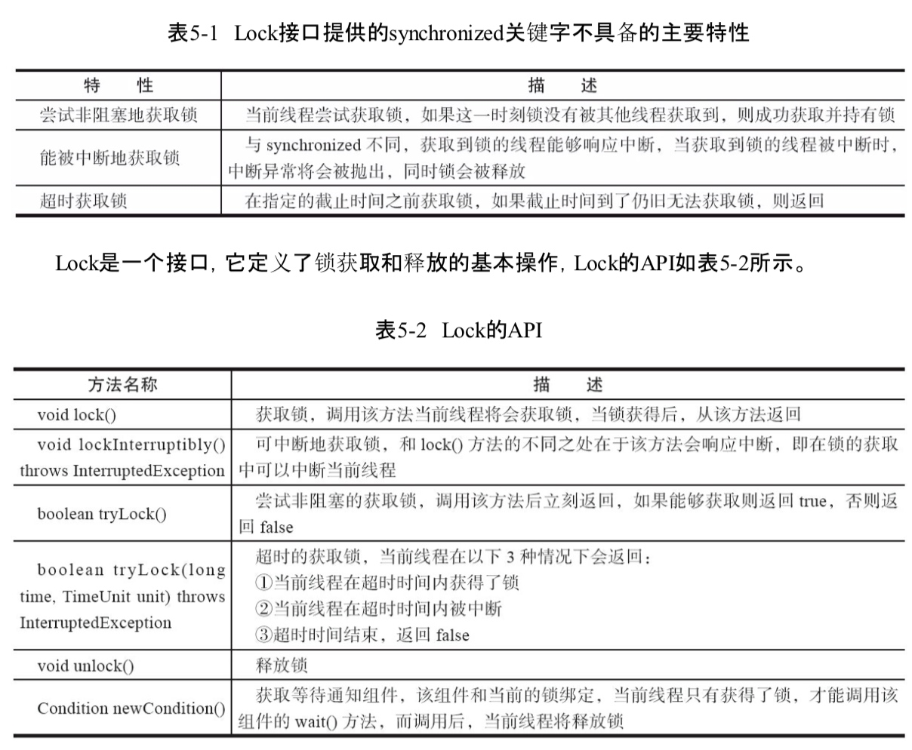
ReentrantLock 和 ReetranReadWriteLock 可重入锁和可重入读写锁
可重入的意思是可以被同一个线程重复加锁。
读写锁适用于生产者消费者场景。分为读锁和写锁。
Object的wait，notify和condition的await，signal
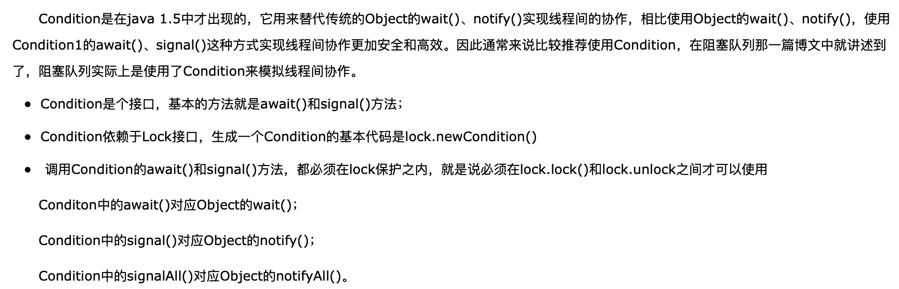
ConcurrentHashMap分析
使用了锁来保证线程安全。使用了锁分段技术。减少了锁的冲突，从而提高了效率。
ConcurrentLinkedQueue分析
学习其特别的尾节点定义方式。可以很大程度减少冲突。其使用CAS操作来避免冲突。但是其特别的尾节点定义方式，使得CAS操作不那么容易失败。
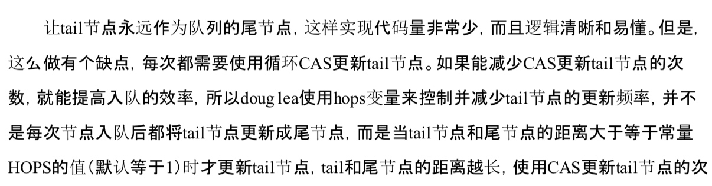
出队也有相似的逻辑
Java中的阻塞队列
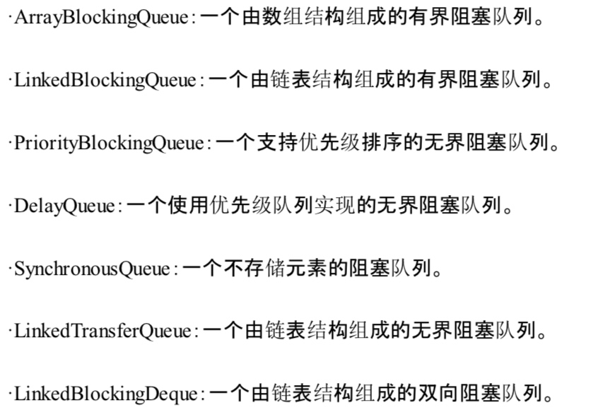
DelayQueue
可以支持延时获取元素的队列，要求队列中的元素必须实现Delayed接口
- 经典场景
缓存系统
定时任务调度
SynchronousQueue
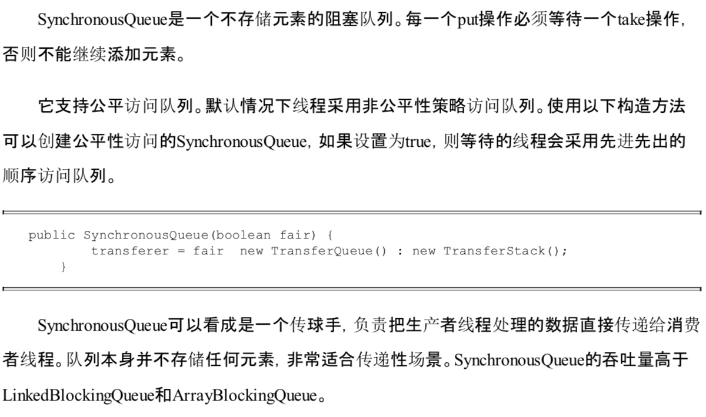
LinkedBlockingQueue
用在工作窃取模式
CountDownLatch join的升级版
Semaphore
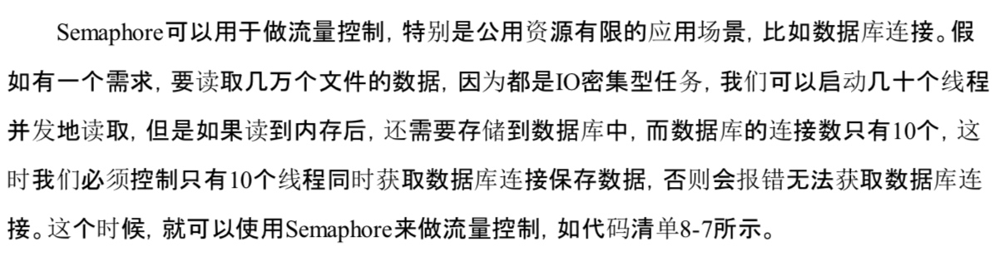
线程池
- 队列模型的选取
- 建议使用有界队列
- 建议和系统的核心数挂钩？？
- 饱和策略的选取和试用场景
乐观锁，悲观锁
乐观锁就是CAS操作
悲观锁就是synchronized
乐观锁认为读大于写，不用一下子就把线程锁了。而是尝试一下。
悲观锁认为系统冲突严重，必须锁。
CAS竞争锁
CAS操作
偏向锁
轻量级锁
乐观锁
悲观锁
volatile 和 ++
threadLocal
threadpool
condition 是和lock相配合的
相比wait，notify是和synchronized配合的
锁分段技术，代表concurrentHashMap
各种queue的特点，区别，和使用场景。最好有范例。各种queue的试用场景
线程池
结合阿里的java开发手册中关于线程池的部分结合理解
工作线程worker
threadLocal 和 volatile变量